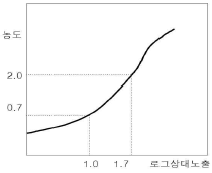
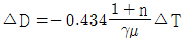
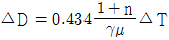
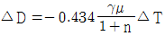
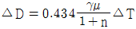

방사선비파괴검사기능사 (2013-01-27 기출문제)
1과목: 방사선투과시험법
1. 누설검사시험 중 누설량의 값을 쉽게 알수 있는 방법은?
- 발포법
- 헬륨법
- 방치법
- 암모니아법
(정답률: 63%)

2. 와전류탐상검사에서 사용하는 시험코일이 아닌 것은?
- 내삽형 코일
- 표면형 코일
- 침투형 코일
- 관통형 코일
(정답률: 79%)
3. 결함검출 확률에 영향을 미치는 요인이 아닌 것은?
- 결함의 이방성
- 균질성이 있는 재료 특성
- 검사시스템의 성능
- 시험체의 기하학적 특징
(정답률: 63%)
4. 누설비파괴검사법 중 헬륨질량분석시험의 종류가 아닌 것은?
- 검출기프로브법
- 침지법
- 진공후드법
- 압력변화법
(정답률: 20%)
5. 시험체의 양면이 서로 평행해야만 최대의 효과를 얻을 수 있는 비파괴검사법은?
- 방사선투과시험의 형광투시법
- 자분탐상시험의 선형자화법
- 초음파탐상시험의 공진법
- 침투탐상시험의 수세성 형광침투법
(정답률: 66%)
6. 용제제거성 형광 침투탐상검사의 장점이 아닌 것은?
- 수도시설이 필요없다.
- 구조물의 부분적인 탐상이 가능하다.
- 표면이 거친 시험체에 적용할 수 있다.
- 형광 침투탐상검사방법중에서 휴대성이 가장 좋다.
(정답률: 77%)
7. 침투탐상시험을 위한 침투액의 조건이 아닌 것은?
- 침투성이 좋을 것
- 형광휘도나 색도가 뚜렷할 것
- 점도가 높을 것
- 부식성이 없을 것
(정답률: 82%)
8. 자분탐상시험 중 시험체를 먼저 자화시킨 다음 자분을 뿌려 검사하는 방법을 무엇이라하는가?
- 연속법
- 잔류법
- 습식법
- 건식법
(정답률: 64%)
9. 다음 중 와전류탐상시험으로 측정할 수 있는 것은?
- 절연체인 고무막 두께
- 액체인 보일러의 수면 높이
- 전도체인 파이프의 표면 결함
- 전도체인 용접부의 내부 결함
(정답률: 73%)
10. 초음파의 발생에서 음속(C), 주파수(f), 파장(λ)의 관계를 옳게 표현한 것은?
- C = λ/f
- C = f/λ
- C = fλ
- C = 1/fλ
(정답률: 62%)
11. 가동 중인 열교환기 투브의 전체 벽두께를 측정할 수 있는 초음파탐상검사법은?
- EMAT
- IRIS
- PAUT
- TORD
(정답률: 65%)
12. X선 필름에 영향을 주는 후방산란을 방지하기위한 가장 적당한 조작은?
- X선관 가까이 필터를 끼운다.
- 필름과 표면과 피사체 사이를 막는다.
- 두꺼운 마분지로 필름 카세트를 가린다.
- 두꺼운 납판으로 필름 카세트 후면을 가린다.
(정답률: 76%)
13. 표면 또는 표면직하 결함 검출을 위한 비파괴검사법과 거리가 먼 것은?
- 중성자투과검사
- 자분탐상검사
- 침투탐상검사
- 와전류탐상검사
(정답률: 82%)
14. 시험체에 있는 도체에 전류가 흐르도록 한 후 형성된 시험체 중의 전위분포를 계측해서 표면부의 결함을 측정하는 시험법은?
- 광탄성시험법
- 전위차시험법
- 응력 스트레인 측정법
- 적외선 서모그래픽 시험법
(정답률: 77%)
15. 기하학적 불선명도와 관련하여 좋은 식별도를 얻기 위한 조건으로 옳지 않은 것은?
- 선원의 크기가 작은 X선 장치를 사용한다.
- 필름-시험체 사이의 거리를 가능한 한 멀리한다.
- 선원-시험체 사이의 거리를 가능한 한 멀리한다.
- 초점을 시험체의 수직 중심선상에 정확히 놓는다.
(정답률: 78%)
16. 산란방사선의 영향을 줄이기 위한 방법이 아닌 것은?
- 연질 방사선을 사용한다.
- 증감지를 사용한다.
- 마스크를 사용한다.
- 다이아프램을 설치한다.
(정답률: 42%)
17. 다음 그림의 필름 X를 사용하여 10mA-min으로 노출했을 때 관심부위의 농도가 0.7이었다. 관심부위의 농도를 2.0으로 하고자 할 때 필요한 노출은?

- 50mA-min
- 29mA-min
- 17mA-min
- 13mA-min
(정답률: 38%)
18. 필름의 주요 특성 중 하나인 필름콘트라스트(film contrast)에 영향을 주는 인자가 아닌 것은?
- 필름의 종류
- 현상도 및 농도
- 사용된 스크린의종류
- 사용된 방사선의 파장
(정답률: 34%)
19. X선과 감마선은 전자기 방사선으로써, 물질과의 상호작용은 세가지 메카니즘으로 나타난다. 다음 중 틀린 것은?
- 전자쌍 생성(Pair Production)
- 콤프턴 산란(Compton Scattering)
- 음의 분산(Beam spread)
- 광전 효과(Photoelectric Effect)
(정답률: 67%)
20. 산란선을 제거하기 위해 X선관에 부착되는 것이 아닌 것은?
- 여과판(Filter)
- 조리개(Diaphragm)
- 콘(Cone)
- 마스크(Mask)
(정답률: 45%)
2과목: 방사선안전관리 관련규격
21. 다음중 방사선 투과시험시 노출도표에 반드시 명시하지 않아도 되는 것은?
- 현상조건
- 증감지의 종류
- 장비의 제조 년, 월, 일
- 선원과 필름 사이의 거리
(정답률: 78%)
22. 다음 중 선흡수계수에 관한 설명으로 틀린 것은?
- 선흡수계수는 방사선의 에너지가 클수록크다.
- 선흡수계수는 물체의 원자번호가 클수록 크게 된다.
- 선흡수계수는 물체의 밀도가 클수록 크게 된다.
- 선흡수계수가 클수록 방사선 감쇠의 정도가 커진다.
(정답률: 38%)
23. Co-60 선원에서 4반감기가 지난 후의 방사선원의 강도는 최초의 방사선 강도의 몇 %인가?
- 6.25%
- 12.5%
- 25%
- 50%
(정답률: 78%)
24. 시험체 내에 두께가 △T 인 미소결함이 존재한다고 할 때, 미소결함의 두께 △T 에 대응하는 투과사진의 콘트라스트 △T 를 구하는 식은? (단, γ는 필름콘트라스트, μ 는 선흡수계수, n 은 산란비를 나타낸다.)




(정답률: 38%)
25. X선관의 음극 필라멘트로 주로 많이 사용되는 물질은?
- 텅스텐
- 철
- 구리
- 알루미늄
(정답률: 78%)
26. 방사선투과사진 상에 나뭇가지 모양의 방사형 검은 마크가 가끔생기는 경우는?
- 오물이 묻었을 때
- 연박 스크린이 긁혔을 때
- 필름을 넣을 때 필름이 꺾였을 때
- 필름취급부주의로 인한 정전기가 발생하였을 때
(정답률: 76%)
27. 방사선 투과검사시 필름에 직접 납스크린을 접촉하여 사용하는 이유로 타당하지 않은 것은?
- 납스크린에 의해 방출된 전자에 의한 필름의 사진작용 증대
- 1차방사선에 비해 파장이 긴 산란방사선을 흡수
- 스크린에 의해 방출되는 빛의효과에 의해 사진 작용 강화
- 1차방사선의 강화
(정답률: 43%)
28. 방사선을 측정할 때 사용되는 감마상수( γ-factor)에 관한 설명으로 옳은 것은?
- 반감기의 다른 표현이다.
- 방사능 측정시의 보정인자를 나타낸다.
- 방사성 물질의 단위를 나타내는 것이다.
- 방사성 물질 1Ci의 점선원에서 1m거리에 1시간에 조사되는 조사선량을 나타낸다.
(정답률: 65%)
29. 강용접 이음부의 방사선투과 시험방법(KS B 0845)에 의한 결함의 분류방법에서 시험시야의 크기는 어떻게 구분하고 있는가?
- 10×10, 10×20, 10×30
- 10×10, 20×20, 30×30
- 10×10, 10×20, 10×50
- 10×10, 30×30, 50×50
(정답률: 60%)
30. 다음 중 방사선 흡수선량의 단위로 옳은 것은?
- R/h
- Gy
- Sv
- Ci
(정답률: 67%)
31. 강용접 이음부의 방사선투과 시험방법(KS B 0845)의 맞대기 용접이음부 촬영배치에 대한 설명으로서 선원과 필름사이의 거리는 시험부의 선원측 표면과 필름사이 거리의 m배 이상으로 한다고 규정되어 있다. 여기서 상질이 B급일 경우 m에 대한 설명으로 옳은 것은?
- 3 × 선원치수/투과도계의식별최소선지름 또는 6의큰쪽값
- 4 × 선원치수/투과도계의식별최소선지름 또는 6의큰쪽값
- 3 × 선원치수/투과도계의식별최소선지름 또는 7의큰쪽값
- 4 × 선원치수/투과도계의식별최소선지름 또는 7의큰쪽값
(정답률: 66%)
32. 강용접 이음부의 방사선투과 시험방법(KS B 0845)에 따라 강판의 T용접 이음부의 촬영 방법에 대한 설명으로 틀린 것은?
- 시험부의 유효길이의 양 끝 부근에 투과도계를 각 1개 놓는다.
- 계조계는 살두께 보상용 쐐기 위에 용접부에 인접한 중앙에 놓는다.
- 선원과 시험부의 선원쪽 표면사이의 거리 L1은 시험부의 유효길이 L3의 2배 이상으로 한다.
- 시험부이 유효길이 L3을 나타내는 기호는 선원 쪽에 둔다.
(정답률: 34%)
33. 다음 중 원자력안전법 시행령에서 규정하고 있는 “방사선”에 해당되지 않는 것은?
- 중성자선
- 감마선 및 엑스선
- 1만전자볼트 이상의 에너지를 가진 전자선
- 알파선, 중양자선, 양자선, 베타선 기타 중하전입자선
(정답률: 81%)
34. 임의의 선원으로부터 5m거리에서의 선량율이 50mR/h라고 한다면 동일 조건에서 거리가 10m인 지점에서의 이 선원의 선량율은?
- 25mR/h
- 20mR/h
- 12.5mR/h
- 6.25mR/h
(정답률: 57%)
35. 강용접 이음부의 방사선투과 시험방법(KS B 0845)에서 계조계 사용에 관한 설명으로 옳은 것은?
- 모재두께 50mm이하인 강판맞대기 용접이음부에 사용한다.
- 모재두께가 10mm씩 증가할 때마다 각기 다른 5종류가 있다.
- 모재두께 100mm 이하인 강판의 원둘레 용접이음부에 사용한다.
- 모재두께가 15mm씩 증가할 때마다 각기 다른 3종류가 있다.
(정답률: 70%)
36. 강용접 이음부의 방사선투과 시험방법(KS B 0845)에 의해 14인치의 유효길이를 갖는 X선 필름으로, 상질의 종류 B급으로 투과사진을 촬영 할 때 강판의 맞대기용접부 두께가 1인치인 경우 선원과 시험부의 선원측 표면간 거리는 최소한 얼마이상 떨어져야 하는가?
- 13인치
- 28인치
- 36인치
- 42인치
(정답률: 46%)
37. 다음 중 γ선에 대한 감수성이 가장 큰 인체 부위는?
- 근육
- 생식선
- 피부
- 조혈장기
(정답률: 64%)
38. 주강품의 방사선 투과시험방법(KS D 0227)에 의한 주강품의 방사선 투과시험에 사용하는 바늘형 투과도계에 관한 설명으로 틀린 것은?
- 틀의 재질은 선보다 방사선의 흡수가 커야한다.
- 04F의 선의길이는 25mm이상이다.
- 32F의 선지름은 0.80~3.20mm로 7개로 배열되어 있다.
- 선의 배열은 왼쪽부터 오른쪽으로 점차 굵은 것을 배열한다.
(정답률: 54%)
39. 알루미늄 평판 접합 용접부의 방사선 투과시험 방법(KS D0242)에서 알루미늄 계조계의 형 종류로 맞는 것은?
- A, B, C
- D, E, F, G
- A, B, D
- A1, A2, B1, B2
(정답률: 50%)
40. 알루미늄 평판 접합 용접부의 방사선 투과시험방법(KS D0242)에서 1mm길이 텅스텐의 혼입이 1개일 때 어떻게 등급분류하게 되는가?
- 블로홀의 1/2 값을 계산한다.
- 블로홀로 계산한다.
- 블로홀의 2배 값을 계산한다.
- 결함점수로는 계산하지 않는다.
(정답률: 66%)
3과목: 금속재료일반 및 용접 일반
41. 주강품의 방사선투과 시험방법(KS D 0227)에 규정한 주강품의 방사선투과시험에서 사진의 등급을 분류할 때 시험부에 있는 결함으로 옳은 것은?
- 융합불량, 블로홀, 모래박힘 및 개재물, 갈라짐
- 블로홀, 용입불량, 슈링키지, 갈라짐
- 모래박힘 및 개재물, 슈링키지관, 언더컷, 균열
- 블로홀, 모래박힘 및 개재물, 슈링키지, 갈라짐
(정답률: 50%)
42. 개인 피폭선량 측정기에 관한 설명으로 틀린 것은?
- 필름배지는 방사선에 의한 사진 유제의 흑화작용을 응용한 것으로서 소형이며 반영구적인 기록 보존에 적당하다.
- 형광유리선량계는 소형의 특수유리가 방사선의 조사를 받으며 바로 형광이 발하므로 그 형광량의 대소를 측정해서 방사선령을 구한다.
- 열형광선량계(TLD)는 방사선에 조사된 특수한 결정물질을 가열하면 피폭선량에 비례하는 형광을 발하는 현상을 이용한 것이다.
- 알람메터는 피폭선량이 미리 설정되어 있는 값에 도달되면 경보음을 내도록 한 것이다.
(정답률: 49%)
43. 강대금(steel back)에 접착하여 바이메탈 베어링으로 사용하는 구리(Cu)-납(Pb)계 베어링합금은?
- 켈멧(kelmet)
- 백동(cupronickel)
- 베비트메탈(babbit metal)
- 화이트메탈(white metal)
(정답률: 64%)
44. Al-Si계 합금에 금속나트륨, 수산화나트륨, 플루오르화알카리, 알칼리염류 등을 첨가하면 조직이 미세화되고 공정점이 내려간다. 이러한 처리방법은?
- 시효처리
- 개량처리
- 실루민 처리
- 용체화 처리
(정답률: 55%)
45. 라우탈(Lautal) 합금의 특징을 설명한 것 중 틀린 것은?
- 시효경화성이 있는 합금이다.
- 규소를 첨가하여 주조성을 개선한 합금이다.
- 주조 균열이 크므로 사형 주물에 적합하다.
- 구리를 첨가하여 피삭성을 좋게 한 합금이다.
(정답률: 48%)
46. 황동에 납(Pb)을 첨가하여 절삭성을 좋게 한 황동으로 스크류, 시계용기어 등의 정밀가공에 사용되는 합금은?
- 리드 브라스(lead brass)
- 문츠메탈(muntz metal)
- 틴 브라스(tin brass)
- 실루민(silumin)
(정답률: 42%)
47. Fe-C 평행상태도에서 δ(고용체)+L(융체)⇄γ(고용체)로 되는 반응은?
- 공정점
- 포정점
- 공석점
- 편정점
(정답률: 45%)
48. 열팽창계수가 아주 작아 줄자, 표준자 재료에 적합한 것은?
- 인바
- 센더스트
- 초경합금
- 바이탈륨
(정답률: 67%)
49. 다음 중 진정강(Killed steel)이란?
- 탄소(C)가 없는 강
- 완전 탈산한 강
- 캡을 씌워 만든 강
- 탈산제를 첨가하지 않은 강
(정답률: 79%)
50. 오스테나이트계의 소테인리스강의 대표강인 18-8 스테인리스강의 합금 원소와 그 함유량이 옳은 것은?
- Ni(18%)-Mn(8%)
- Mn18%)-Ni(8%)
- Ni(18%)-Cr(8%)
- Cr(18%)-Ni(8%)
(정답률: 53%)
51. Fe-C계 평형상태도에서 냉각시에 Acm선 이란?
- δ 고용체에서 γ고용체가 석출하는 온도선
- γ고용체에서 시멘타이트가 석출하는 온도선
- α고용체에서 펄라이트가 석출하는 온도선
- γ고용체에서 α고용체가 석출하는 온도선
(정답률: 43%)
52. 실용되고 있는 주철의 탄소 함유량(%)으로 가장 적합한 것은?
- 0.5 ~ 1.0%
- 1.0 ~ 1.5%
- 1.5 ~ 2.0%
- 3.2 ~ 3.8%
(정답률: 50%)
53. 처음에 주어진 특정한 모양의 것을 인장하거나 소성변형한 것이 가열에 의하여 원래의 상태로 돌아가는 현상은?
- 석출경화효과
- 시효현상효과
- 형상기억효과
- 자기변태효과
(정답률: 80%)
54. 특수강에서 함유량이 증가하면 자경성을 주는 원소로 가장 좋은 것은?
- Cr
- Mn
- Ni
- Si
(정답률: 57%)
55. 탄소강 중에 포함되어 있는 망간(Mn)의 영향이 아닌 것은?
- 고온에서 결정립 성장을 억제시킨다.
- 주조성을 좋게 하고 황(S)의 해를 감소시킨다.
- 강의 담금질 효과를 증대시켜 경화능을 크게한다.
- 강의 연신율은 그다지 감소시키지 않으나 강도, 경도, 인성을 감소시킨다.
(정답률: 63%)
56. 금속의 성질 중 전성(展性)에 대한 설명으로 옳은 것은?
- 광택이 촉진되는 성질
- 소재를 용해하여 접합하는 성질
- 엷은 박(箔)으로 가공할 수 있는 성질
- 원소를 첨가하여 단단하게 하는 성질
(정답률: 67%)
57. 동(Cu)합금 중에서 가장 큰 강도와 경도를 나타내며 내식성, 도전성, 내피로성 등이 우수하여 베어링, 스프링, 전기접전 및 전극재료 등으로 사용되는 재료는?
- 인(P)청동
- 베릴륨(Be) 동
- 니켈(Ni) 청동
- 규소(Si) 동
(정답률: 43%)
58. 납땜을 연납땜과 경납땜으로 구분할 때의 융점 온도는?
- 100℃
- 212℃
- 450℃
- 623℃
(정답률: 50%)
59. 정격2차 전류가 200A, 정격 사용률이 50%인 아크용접기로 120A의 용접전류를 사용하여 용접 하였을 때 허용사용률은 약 얼마인가?
- 83%
- 100%
- 139%
- 167%
(정답률: 44%)
60. 가스용접봉의 성분 중 강의 강도를 증가시키나, 연신율 굽힘성 등이 감소되는 성분은?
- C
- Si
- P
- S
(정답률: 51%)